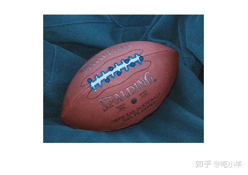
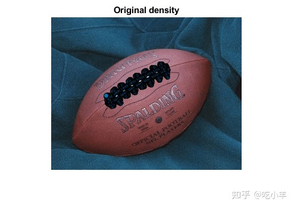
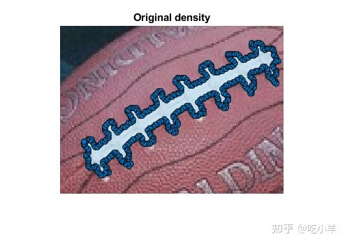
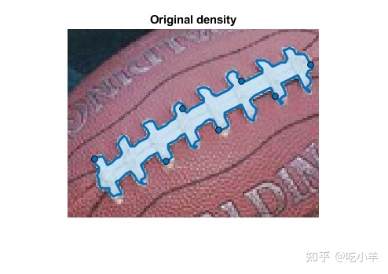
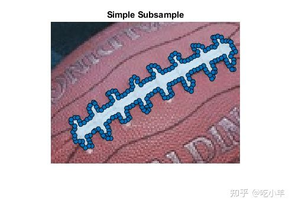
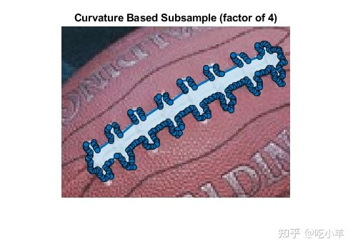
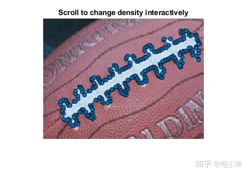
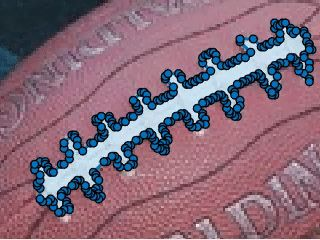

Home
此示例显示如何对FreehandROI 对象中的点进行降采样或减少点数。
介绍
drawfreehand函数创建一个平滑的、手绘的感兴趣区域 (ROI)。然而，ROI 的边缘实际上是由沿边界分布的离散点组成的。有两个因素会影响手绘 ROI 的平滑程度：1) 点的密度； 2)手绘 ROI 对象的Smoothing属性。
交互式绘图时，鼠标运动决定点的密度。对于大型复杂 ROI，使用的点数可能非常多。
Smoothing属性控制边界的外观。默认情况下，Freehand对象使用 sigma 值为 1 且滤波器大小为 5 的高斯平滑内核。更改此值只会更改边界的外观，不会更改对象的底层Position属性。
点的默认密度
降低点的密度有助于减少存储 ROI 数据所需的空间，并且还可以加快任何依赖于这些点数量的计算。降低点密度的一种方法是对点进行降采样，例如，每隔一个点选取一次。
通过将蒙版转换为 ROI ，可以创建手绘 ROI 示例。ROI 非常密集，因为每个边界像素都对应于 ROI 中的一个点。
im = imread('football.jpg');
bw = im(:,:,1)>200;
bw = bwareafilt(bw, 1);
bloc = bwboundaries(bw,'noholes');
roipos = fliplr(bloc{1});
imshow(im);
hfh = drawfreehand('Position', roipos);

要可视化点的密度，请将 ROI 中的每个点都变成一个路标点。
hfh.Waypoints(:) = true;
title('Original density');
snapnow
％ 放大
xlim([80 200]);
ylim([70 160]);
snapnow


对位置点进行降采样
由于手绘 ROI 非常密集，所以需要对构成手绘 ROI Position属性的点进行降采样。降采样可以在不降低保真度的情况下显著减小尺寸。查询初始的、完整的、细粒度的位置。
fpos = hfh.Position;
降采样，每隔一个点采一次。
cpos = fpos(1:2:end,:);
更新 ROI 的 Position 属性。
hfh.Position = cpos;

要查看密度，请将所有点转换为路标点。
hfh.Waypoints(:) = true;
title('Simple Subsample');
snapnow

降采样 - 使用变化率
对点进行降采样的更好方法是有选择地删除具有低曲率的点。删除沿着 ROI 相对直线部分的点而不是靠近曲线的点更有意义。定义曲率值的一种简单方法是测量位置的变化率。
测量变化率。第一个点的相邻点是最后一个点。
dfpos = diff([fpos(end,:); fpos]);
基于简单的低通滤波器定义曲率的临时度量。
cm = sum(abs(conv2(dfpos,ones(3,2), 'same' )),2);
按曲率排序。
[~, cmInds] = sort(cm);
选择 3/4 具有较低曲率值的点以从 ROI 中删除。
numPointsToCull = round(0.25*size(fpos,1));
删除这些位置。
cpos = fpos; cpos(cmInds(1:numPointsToCull),:) = [];
更新 ROI，打开所有路标点以查看影响。
hfh.Position = cpos;
hfh.Waypoints(:) = true;
title('Curvature Based Subsample (factor of 4)');
snapnow

降采样 -在手绘 ROI 对象上使用reduce方法
对点进行降采样的更好方法是在 ROI 对象上使用reduce方法。reduce方法直接对PositionROI 对象的属性进行操作。您可以通过将 [0，1.0] 之间的容差值指定为可选输入参数来影响移除的点数。容差的默认值为 0.01。
重置Position属性并对ROI 对象调用reduce。
hfh.Position = fpos;
reduce(hfh);
% 查看更新的 ROI，将所有点转换为航点以查看影响。
hfh.Waypoints(:) = true;
title('Subsampling using reduce method');
snapnow
交互式降采样
另一种降采样方法，是使用事件，让整个过程更容易。首先创建一个侦听器，以交互方式更改手绘 ROI 使用的点数。使用Freehand 对象的UserData属性来缓存全分辨率的Position数据以及容差的当前值。然后通过创建一个新对象uimenu并将其作为手绘对象UIContextMenu的父对象，来自定义上下文菜单添加到 ROI对象。此菜单选项允许最终确定ROI，这将删除临时缓存。
恢复原始 ROI，并将原始位置及其曲率度量缓存在 UserData 中。
hfh.Waypoints(:) = true; hfh.UserData.fpos = fpos; hfh.UserData.tol = 0;
响应鼠标滚动。
h = gcf； h.WindowScrollWheelFcn = @(h, evt) changeSampleDensity(hfh, evt);
添加上下文菜单以完成 ROI 并执行所需的任何清理。
uimenu(hfh.UIContextMenu, 'Text','Finalize',...
'MenuSelectedFcn', @(varargin)finalize(hfh));
title('Scroll to change density interactively');

交互式降采样的动画

回调函数 - 根据鼠标滚动改变样本密度
此函数在鼠标滚动操作时被调用。向上滚动会增加密度，向下滚动会降低密度。这允许您以交互方式选择要保留的点数。
function changeSampleDensity(hfh, evt) % 恢复 ROI 的位置属性。 hfh.Position = hfh.UserData.fpos; % 根据滚动方向按固定量更改容差。 % 此代码为每个滚动增量更改 0.01 的容差。 tol = hfh.UserData.tol + 0.01 * (evt.VerticalScrollCount); % 将公差值的范围限制在 0 到 0.15 之间，这是 % 有用的范围。 tol = max(min(tol, 0.15), 0); % 调用 |减少| 具有规定的公差。 reduce(hfh,tol); hfh.UserData.tol = tol; % 更新 ROI 并将所有点转换为路标点以显示密度。 hfh.Waypoints(:) = true; end
回调函数 - 完成手绘 ROI
删除并使用二次采样点创建新的手绘 ROI 以节省空间。
function finalize(hfh) h = ancestor(hfh, 'figure'); % 重置鼠标滚轮回调。 h.WindowScrollWheelFcn = []; % 保存最终的点集。 pos = hfh.Position; % 删除并使用新的 |Position| 创建新的手绘 ROI 价值。 delete(hfh); drawfreehand(gca, 'Position' , pos); end
======================================================================
我的测试结果及程序
下面是我测试的代码：

注：本文根据MATLAB官网内容修改而成。